Enunciado del problema
Una recta d corta los lados AB, BC, CA de un triángulo ABC en C', A', B' respectivamente. Sean L la intersección de AA' con BB', M la intersección de BB' con CC' y N la intersección de CC' con AA'. Demostrar que las rectas AM, BN y CL son concurrentes.
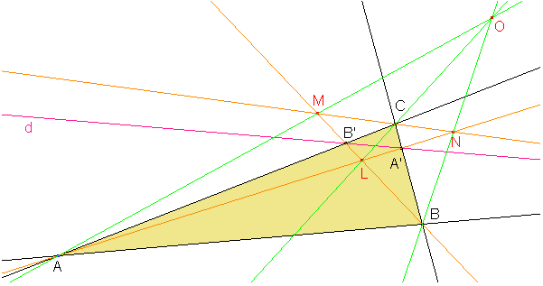 {596., 312.}, ImageMargins -> {{0., 0.}, {0., 0.}}, ImageRegion -> {{0., 1.}, {0., 1.}}]" width="601" height="317" align="absmiddle" />
Fórmulas necesarias
Como estamos usando Mathematica para resolver el problema, representamos puntos y rectas como ternas {u,v,w} de números.
Usaremos la misma función Unir para hallar el punto de intersección de dos rectas y para hallar la recta que une dos puntos.
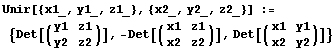
Introducción de datos
Ahora introducimos directamente las coordenadas de algunos de los puntos que intervienen en el problema:
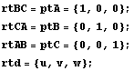
Cálculos
Vamos haciendo los cálculos especificados por el enunciado:
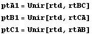
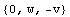
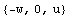
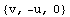
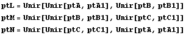
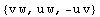
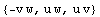
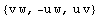
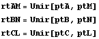
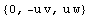
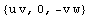
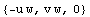
Las tres rectas serán concurrentes si y solo si su determinante es cero:
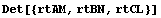
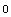
Created by Mathematica (March 1, 2005)